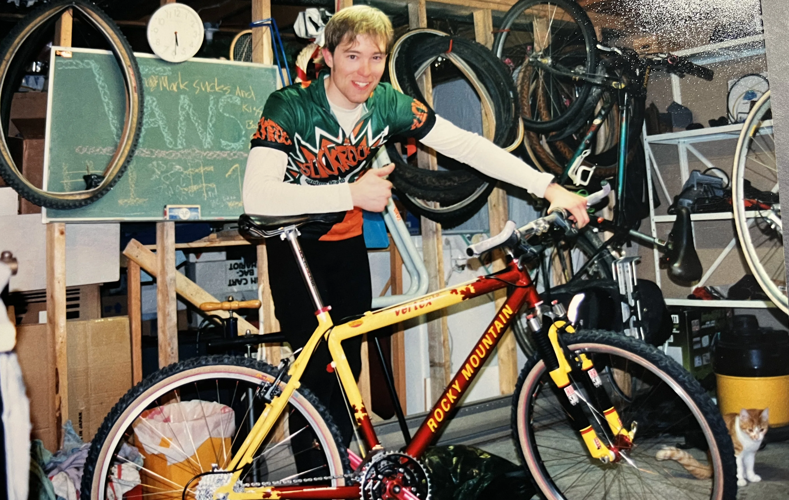

The bike I raced for the 1997 season. Very quick and nimble. Wants to climb like a monkey! And did I mention it was light?
Here's the spec's from the Rocky Mountain Homepage: (slightly modified to make an awesome bike even better!)
| Frame |
- Vertex t.o.: Easton Custom Elite "H.B.O." taperwall aluminum with custom triple taper stays and A.C.S.D. 1.5 kg / 3.3 lb. (18.5")
|
| Fork |
|
| Wheels |
- Handbuilt by myself (not Wheelsmith - shudder!)
- Brubz II front and XTR rear hub
- WTB 44/50 front and rear tires with 120 TPI casing
- Kevlar bead
- Sun XC rims with 0 degree braking surface and eyelets
- DT competition 1.8 / 1.6 double-butted stainless spokes
|
| Drivetrain |
- XTR shifters
- Shimano XTR front and rear derailleurs
- Race Face LP compact cranks with Race Face rings 22-32-44
|
| Other Components |
- Shimano XTR V-Brakes and levers
- Shimano 747 clipless pedals
- Syncros Cattlehead stem with Race Face Air Alloy bar
- Selle Italia Flite saddle and Syncros Pro Ti seatpost
|
| Colour |
- Roost Red / Yo Yellow Canadian Custom
|
| Size / Weight |
|
Check out the Rocky Mountain Homepage!
MTB Main |
Main Page